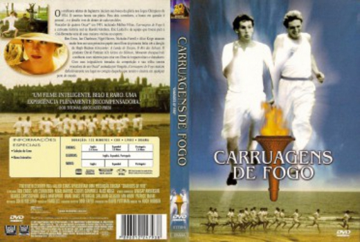

Carruagens de Fogo (1981)


Eles vão sacrificar tudo pela vitória... excepto a própria honra.

Avaliação (TMDb):


6.9/10 (564 votos)
Avaliação (Usuário):
Outro Título:Chariots of Fire
País:United States, 123 minutos
Idiomas falados:Inglês, Espanhol, Português
Gênero(s):Drama, História
Diretor(s):Hugh Hudson
Codec:MPEG-2 (DVD)
Número: 883
Sinopse:
O filme mostra a preparação da equipe olímpica de atletismo da Grã-Bretanha para os Jogos Olímpicos de 1924, em Paris. Para dois corredores, a honra em questão é pessoal... e o desafio vem de dentro de cada um deles.
Elenco:
Ben Cross, Ian Charleson, Cheryl Campbell, Alice Krige, Nigel Havers, Ian Holm, Nicholas Farrell, Daniel Gerroll, John Gielgud, Lindsay Anderson
Tipo de mídia: DVD5,
Legendas: Inglês, Espanhol, Português
Alugado: Não
Tela: 1.85:1